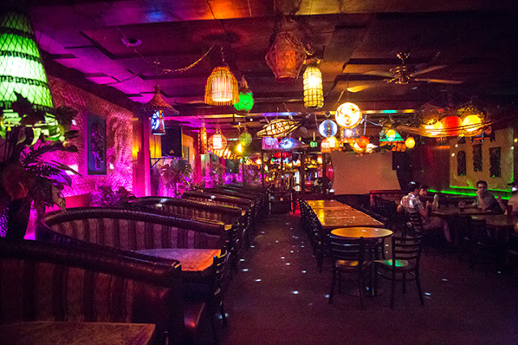

📅 Karaoke Nights Schedule:
Every day
8:00 pm to 2:00 am
📍 Location:
[Alibi Lounge Address]
Don't miss out on the ultimate karaoke experience in [Community Name]! Gather your friends, warm up those vocal cords, and join us at Alibi Lounge for nights filled with music, laughter, and unforgettable moments.
See you on the stage!
🎤 Karaoke Extravaganza with Karafun!
At Alibi Lounge, we take karaoke seriously, and that's why we've chosen Karafun as our go-to karaoke service. Karafun offers an extensive library of songs spanning various genres, ensuring there's something for everyone. Whether you're into classic rock, pop hits, or the latest chart-toppers, Karafun has you covered.